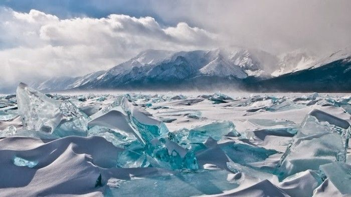
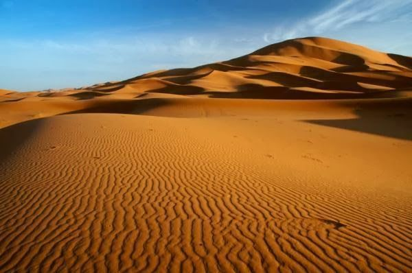
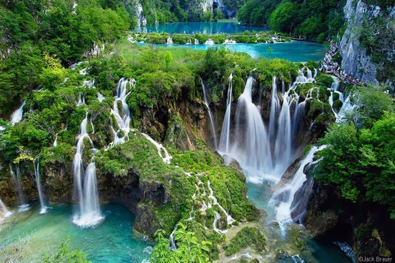

Los 20 Paisajes más Impresionantes del Mundo

El planeta tierra es en sí mismo una de las grandes maravillas del universo, dentro de él podemos encontrar rincones que ni la misma mente humana hubiera nunca imaginado. En este ranking he tratado de recoger los 20 paisajes más impresionantes del mundo, aunque siendo sincero, ¡¡hubiera incluido muchos más!!
1- EL GRAN CAÑÓN DEL COLORADO
Escarpada garganta excavada por el río Colorado se encuentra en el Parque Nacional del Gran Cañón en el norte de Arizona (EEUU). Desde la reserva Hualapai, es posible caminar desde el Skywalk, una pasarela con el suelo de cristal suspendida sobre el vacío a 1.200 metros de altitud sobre el fondo del cañón.

2- LAGO MORAINE
Se encuentra en el «Valle de los 10 Picos» en el parque Nacional de Banff en Alberta (Canadá), tiene una superficie de medio kilómetro cuadrado y se alimenta del deshielo de un glacial cercano, su característico color azul proviene de la refracción de la luz a causa del polvo de roca que procede de las montañas.

3- CATARATAS DEL IGUAZÚ
Elegidas como una de las «Siete Maravillas Naturales del Mundo», se encuentran situadas entre la provincia argentina de Misiones y el estado brasileño de Paraná dentro del Parque Natural de Iguazú. Está formada por 275 saltos, su mayor salto es de 80 metros y se encuentra en «La Garganta del Diablo», se puede disfrutar de él a tan solo 50 metros desde unas pasarelas que parten desde Puerto Canoas, este salto se sitúa en la frontera de ambos países. También se pueden realizar paseos en lancha bajo los saltos además de hacer senderismo.

4- AOGASHIMA
Aogashima (青ヶ島村) se encuentra ubicada en la subprefectura de Hachijō, Tokio, Japón. Tiene un área de 5,98 km² y una población de 198 habitantes, siendo la municipalidad menos poblada del país. Recuerda mucho a la isla de «El Mundo Perdido», es una fortaleza inexpugnable en mitad del mar, no tiene puertos naturales ni playas sólo altos acantilados y fuertes corrientes en el que solo se puede acceder en barco o en helicóptero. Un lugar aislado, recóndito, paradisíaco que sorprende sólo a la vista. ¡Un paisaje verdaderamente impresionante!
5- GLACIAR PERITO MORENO
Es uno de los paisajes más impresionantes del planeta, se trata de una gruesa masa de hielo ubicada en el departamento Lago Argentino de la provincia de Santa Cruz, en el sudoeste de la Argentina, en la región de la Patagonia, con un frente de 5 km de longitud aflorando sobre el agua con una altura de unos 60 m. El derrumbe de trozos del glacial es todo un espectáculo visual fácilmente apreciable por los turistas.

6- MAR DE CORAL AUSTRALIA
Declarada Patrimonio de la Humanidad por la Unesco en 1981, se encuentra en el oeste del Océano Pacífico frente a las costas de Australia . Toma su nombre de su Gran Barrera de Coral, el mayor arrecife coralino del mundo, se extiende sobre unos 2600 kilómetros de longitud, y se puede ver desde el espacio. Debido a sus aguas templadas, su alta diversidad biológica y su fácil accesibilidad es el principal destino turístico para los aficionados al submarinismo, algo que me lleva a recordaros la necesidad de contratar un seguro de viaje a Australia con cobertura de deportes de aventura.
7- FIORDO LYSEFJORD
Fiordo perteneciente a Noruega se encuentra en el Mar del Norte al este de la ciudad de Stavanger. Su nombre significa «Fiordo claro» por el color claro de sus rocas de granito. La principal atracción de Lysefjord es Preikestolen «El púlpito», una gigantesca plataforma de roca suspendida sobre las aguas a 600 metros de altura y que ofrece una de las imágenes más espectaculares de la naturaleza.
8- ZHANGJIAJIE
Perteneciente al primer Parque Nacional Forestal declarado en China, en 1992 entró a formar parte del Patrimonio Natural Mundial. Sus célebres montañas que presentan diversas formas son consideradas las más insólitas del mundo ocultando sus prominentes cimas entre las nubes. Zhangjiajie no es solo un lugar famoso por sus montañas sino también por el agua; arroyos, fuentes, lagos, cascadas y estanques ofrecen sus inagotables aguas incluso en la estación seca. Este insólito paisaje recuerda mucho al planeta «Pandora» de la película «Avatar» por algo es considerado uno de los paisajes más impresionantes del planeta.
9- HIELO TURQUESA LAGO BAIKAL
Situado en Siberia, su nombre significa en tártaro «Lago Rico» también se le conoce como «El Ojo Azul de Siberia» o «La Perla de Asia», es una increíble maravilla. Además, no es solo uno de los lagos más trasparentes del planeta sino también el lago de agua dulce más antiguo y profundo del mundo con 1.680 metros de profundidad, contiene el 20% de toda el agua dulce de la tierra. Desde enero a mayo el lago se congela pero se puede ver a una profundidad de 40 metros, durante el mes de Marzo se produce un fenómeno inusual, debido a la diferencia de temperaturas entre en día y la noche, la superficie del lago se agrieta y la luz del sol hacen que los fragmentos de hielo se asemejan a trozos de vidrio de color turquesa.
10- OLAS DEL DESIERTO
Es una formación arenisca considerada uno de los paisajes más impresionantes del planeta. Se encuentra situada en una reserva protegida Paria Canyon-Vermilion Cliffs Wilderness al norte del estado de Arizona, en Estados Unidos. Para llegar a la increíble formación de la Ola de Arizona hay que realizar una excursión de casi 5 kilómetros a través de paisajes escarpados, y caminos que ascienden por calzadas de hasta 107 metros de altura, pero la recompensa merece la pena.
11- TORRE DEL DIABLO
El Monumento Nacional de la Torre del Diablo es un cuello volcánico formado por columnas basálticas situado en las Colinas Negras al noreste de Wyoming (EEUU). Se eleva de forma espectacular a 386 metros de altura por encima del terreno circundante, fue el primer monumento nacional declarado en EEUU en 1906. La Torre del Diablo es conocida a nivel mundial por su aparición en la película de Steven Spielberg «Encuentros en la Tercera Fase».
12- CAÑO CRISTALES
Este bonito río de cinco colores no podía dejar de pertenecer a la lista de los paisajes más impresionantes del planeta. Se encuentra ubicado en el Parque Nacional Sierra de la Macarena (Colombia); es conocido como «Río de los cinco colores» o «Río de los Dioses» ya que en su fondo se reproducen algas de agua dulce de diversos colores, que producen la sensación de estar frente a un río de cinco colores: rojo, amarillo, verde, azul y negro, principalmente. Se trata de una sucesión de rápidos, cascadas, correones y pocetas. Las aguas son de tal pureza que permiten ver el fondo y toda la magia que encierra este hermoso río.
13- SALTO DE ÁNGEL
Se localiza en el Parque Nacional Canaima en el estado de Bolívar (Venezuela). Declarado Patrimonio de la Humanidad por la Unesco en 1994, es el salto de agua más alto del mundo con una altura de 979 metros. La vegetación y fauna del parque son de las más antiguas del mundo, y los yacimientos minerales incluyen minas de oro y diamantes. El Salto de Ángel inspiró a Disney Pixar para recrear la selva de la película «Up», así como a James Cameron para recrear los paisajes de Pandora en «Avatar».
14- BORA BORA
Bora Bora geográficamente es un atolón en la Islas de la Sociedad, parte de la Polinesia Francesa ubicada al noroeste de Tahití, a unos 260 km al noroeste de Papeete. Está formado por un volcán extinto, rodeado por una laguna separada del mar por un arrecife, su descubrimiento data del año 1722, es considerada por muchos la isla más bonita del mundo, uno de los paisajes más impresionantes del planeta además de una de las islas más paradisíacas del mundo.
15- SÁHARA
Es el desierto más cálido del mundo y el tercero mayor del planeta tras el Ártico y la Antártida, abarca la mayor parte del norte de África y ocupa una extensión casi tan grande como EEUU o China. Las dunas del desierto del Sáhara pueden alcanzar hasta 180 metros de altura y sin duda son todo un espectáculo visual digno de ser considerado uno de los paisajes más impresionantes del planeta.
16- GRAN AGUJERO AZUL
Se encuentra cerca del centro del arrecife Lighthouse, un pequeño atolón ubicado a 100 kilómetros de la costa continental y la Ciudad de Belice. El agujero es de forma circular, y cuenta con más de 300 metros de ancho y 123 metros de profundidad, este fenómeno es el más grande del mundo en su género y se encuadra dentro de la Barrera de Arrecifes de Belice, declarada Patrimonio de la Humanidad .

17- DESIERTO DEL NAMIB
Se extiende a lo largo de la costa de Namibia, está considerado uno de los paisajes más impresionantes del planeta además del desierto más viejo del mundo y fue declarado Patrimonio de la Humanidad por la Unesco en 2013. El desierto de Namib desemboca escandalosamente en un Atlántico furioso, la «Costa de los Esqueletos», la cual entierra por igual restos de navíos y cetáceos.
18- MONTE RORAIME
Este espectacular monte es el punto más alto de la cadena de meseta Tepuyes situada en su mayor parte en Venezuela, sobresale a más de mil metros sobre la boscosidad del parque y es considerada una de las zonas geológicas más antiguas del planeta, es uno de los destinos predilectos de los mochileros.
.jpg)
19- HALONG BAY
La bahía de Halong es una extensión de agua de aproximadamente 1.500 km² situada al norte de Vietnam. Destacan los elementos kársticos e islas de varios tamaños y formas, es considerada una de las Siete Maravillas Naturales del Mundo y fue declarada Patrimonio de la Humanidad en 1994.
.jpg)
20- LAGOS PLITVICE
Parque Nacional de los lagos Piltvice es uno de los parques nacionales más famosos del planeta y el más importante que ver en Croacia, ya que forma parte del Patrimonio de la Humanidad de la Unesco. El mayor atractivo de este parque único en el mundo son sus 16 pequeños lagos entrelazados entre ellos con cascadas, es todo un paraíso de las aguas y uno de los paisajes más impresionantes del planeta.
